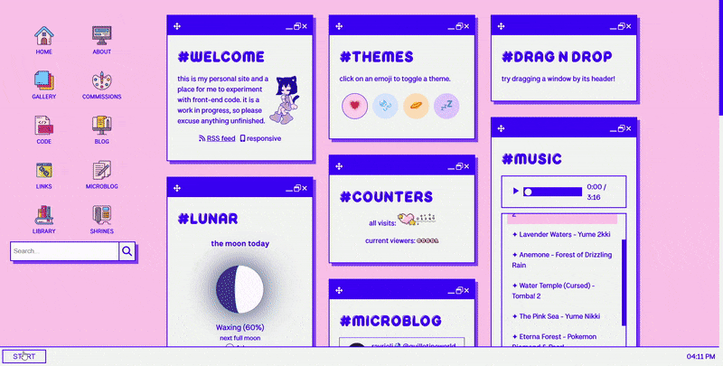
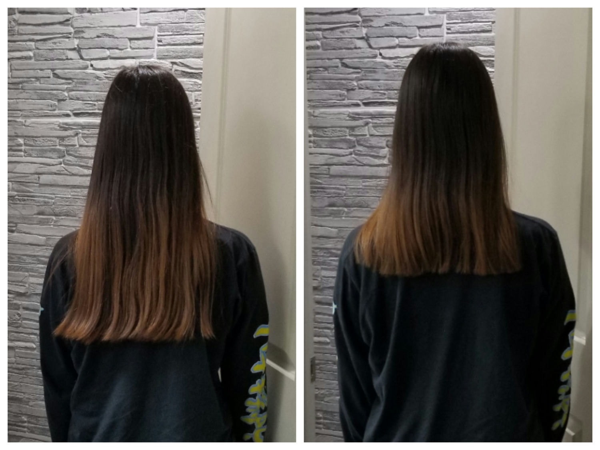

Bye-bye Bootstrap
May 28, 2023
This post is a site update wrapped up in a diary entry, so I’ll start off with a quick rundown of those updates:
- New start menu
- New sitemap
- No more Bootstrap! (lots of style changes, ctrl f5 if anything is off)
Still so much left to do, but I’m trying not to put too much pressure on myself. This might be my last major update for awhile (although I have a few planned shrines & posts which might make it out before all is said and done). My Windows laptop (primary) restarted 14 times in the last 24 hours, which is about as fun as it sounds. Still working on transferring all my shit to an older laptop, but yeah, things are just in flux.
It was whilst anxiously procrastinating moving stuff that I started randomly scraping at the Bootstrap on my site like burnt egg on a nonstick pan, and before I knew it, it turned into a whole thing. Had to comb through all my code for the fourth time, and although I’m pretty tired, look, new start menu!
{kind=link}
I’d previously been using Bootstrap’s JS modal to handle the start menu, but I learned more about vanilla modals when I was working on the Sakura page theme and decided to implement it myself.
But I’m getting ahead of myself.
For those unaware, Bootstrap is a front-end library–arguably the most popular of its kind–that you can drop into your website for extremely quick, basic styling. Without touching a single line of CSS or JS yourself, you can design a serviceable website.
And many, many, many do. Bootstrap’s simplicity means that it’s the first recommendation to novice web developers who are intimidated by or disinterested in CSS. Thus, a sort of digital sameface has emerged, a visual homogenization of the internet. A website that is relying on Bootstrap for its design is immediately identifiable, even if you don’t realize you know what I’m talking about. Peruse through some of these examples, and you’ll get the idea.
Hotly debated and ever-controversial amongst front-end web developers, I’ve often felt defensive over allegations of how Bootstrap is destroying web design. Although Boostrap is fairly opinionated in its design language, you can always override its default styling, after all. Besides, I’d tell myself, I use Bootstrap for its grid system, not its styling.
You see, I also have strong opinions about design, so I’ve often butted heads with Bootstrap. I also have a deep affection for Bootstrap because it saved my ass when I had no idea what I was doing (Cicadagate).
The thing about CSS is that it’s super easy to get started with, but it’s not easy to actually master, and you often think you know way more than you actually do. Tools like Bootstrap are excellent at compensating for these weaknesses–in my case, I was (and am) generally weak with grids and flex. This translated to weakness with responsive CSS and layouts, which made it very difficult to achieve my specific design goals.
This isn’t totally my fault; CSS grid wasn’t fully adopted until 2017 and flexbox didn’t get cross-browser support until 2014. This stuff is constantly evolving! And I realize that I, too, must evolve. Frankly, there’s no real reason to use Bootstrap now that there are better tools. Back when I first used it, it was an emergency situation, and although I’m grateful, it got me into bad habits and let me stagnate.
On top of what it was costing me in my learning, it was also costing my site performance. Dependencies slow your site down, and something as robust as Bootstrap that loads in the <head> tag (meaning it has to load before the rest of your site will) can cause a noticeable performance hit. I’m already using a lot more Javascript than I meant to, so I don’t want to slow my site down even more!
Especially because, well, I was not using it for its design functions. I was primarily using it for its column system (which really is quite useful, and has taught me a lot about what I want from boilerplate CSS), which is achievable without Bootstrap, if a bit more annoying.
I ended up making a general purpose .row flex class and then adding utility classes for different row alignments (center, space-between, space-evenly, etc.) to maintain some of my row construction. I also created a general .grid that auto-fills space and added a few utility classes for column sizing. This got me a long way, but there were still various annoyances.
Happy to say my HTML is much cleaner now that I’m separating concerns more clearly, which often means less repetition. Although I’m still using utility classes, much more CSS is where it belongs…in the stylesheet, that is.
While I was already in there digging around, I went ahead and changed all the window sizing from responsive units to pixel units (which makes it more responsive in some ways, less responsive in others.) Example: Gallery used to be locked into 4 columns, now it’ll shrink to 3 at a certain size. I’m still not happy with all of the shrinking behavior, but let’s put that on a list of things to do…some other time. I’ll put it right under fixing the search function, which I’ve tried and failed to resolve twice now. JS experts hit me up whenever lol.
I did end up making a sitemap–it’s a modified version of this nested menu add-on for Hugo. I couldn’t find anything that did exactly what I want, and as I am still very intimidated by Go, this will do for now. I really love how powerful Hugo is. I will do my best to learn more and more…
Anyways, my mother cut my hair because it was getting unwieldy. I thought this was greatly symbolic in light of my breakup with Bootstrap.
{kind=link}
Farewell, friend!
{kind=link}